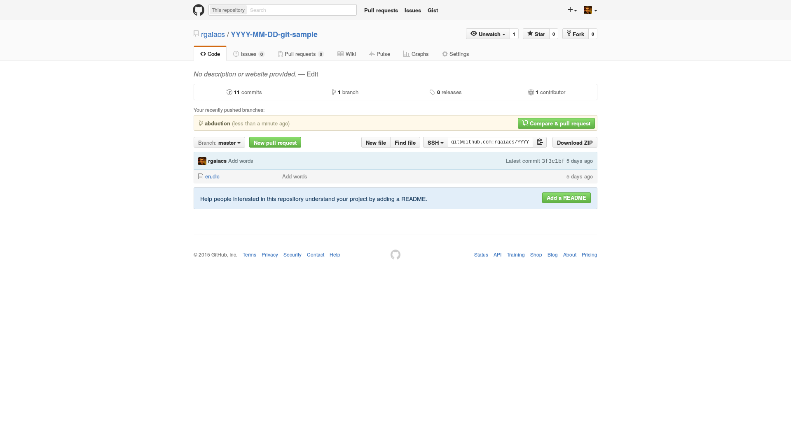
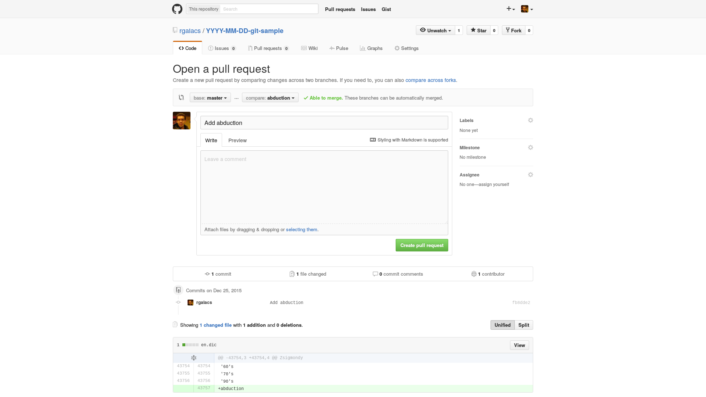
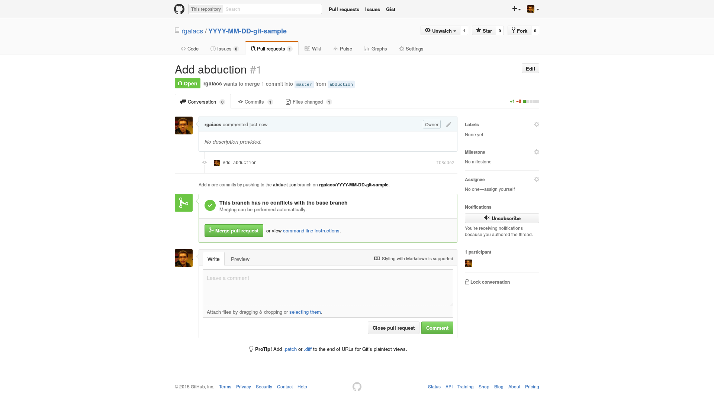
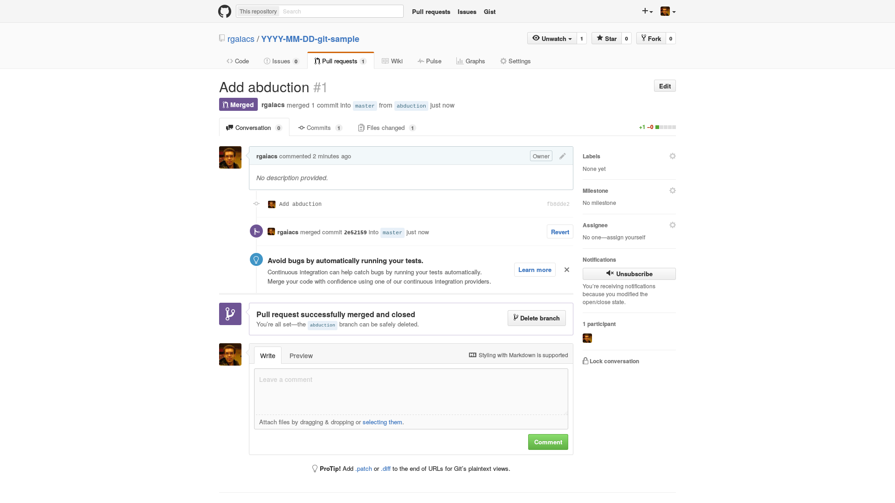

More Version Control with Git
Pull Request
Learning Objectives
- Understand pull request.
When we have branches in GitHub we can merge those with a procedure called pull request. After we push one of our local branches to GitHub and open at our web browser the home page of the Git repository that we make the push for we will get a suggestion to create a pull request.

After we click on “Compare & pull request” we will get a form to fill with informations about the pull request that we want to create.

When we complete the form we can click on “Create pull request.”

If the pull request is OK we can merge it.

More Pull Request
Create a pull request with the branch called genomic.